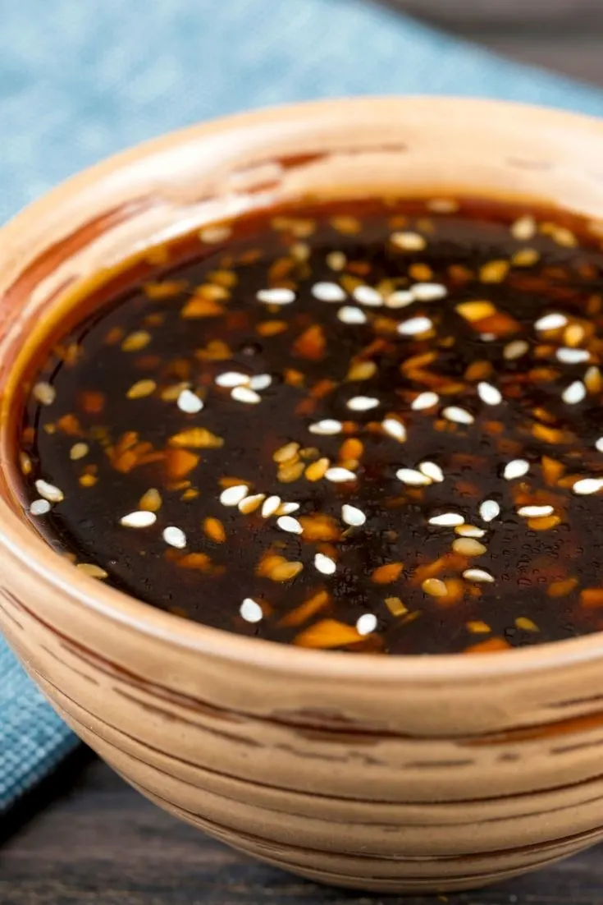

bueatiful home made teriyaki sauce
A teriyaki sauce can be add to chicken, tofu, beef. keeps for about 2 weeks
30 minutes
Ingredients
- 1 knob of ginger
- 2 cloves of garlic
- 2 tablespoons of oil
- 1 cup of sake
- 1 cup of mirin
- 1 cup of soy sauce
- 2 tablespoon cornstarch
- 4 tablespoon water
- 1 tablespoon of sesame seeds
Steps
- Start by peeling your ginger and garlic. Chop the aromatics into very fine pieces.
- Next, drizzle in 1 tablespoon of oil and drop in your finely chopped garlic and ginger. On low heat, let the garlic and ginger bloom and become fragrant.
- After about 3 minutes, add in equal parts of sake, mirin, and soy sauce. Bring to a boil and let the alcohol cook off. This will take about 5 minutes on medium heat.
- Once the sauce has reduced by about 1/3, mix together the corn starch and water in a small bowl.
- Drizzle in your corn starch slurry and give it a mix. Your teriyaki sauce should become nice and thick.
- Finally add in about 1 tablespoon of sesame seeds. Stir to combine and once the sauce is cooled store in an air tight jar. Keep in the fridge until you are ready to use!